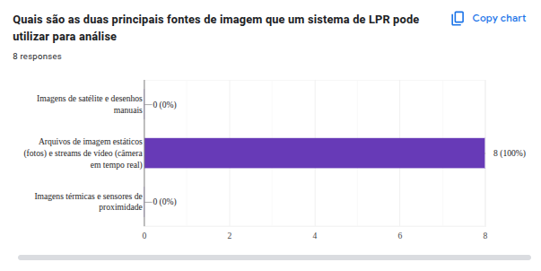
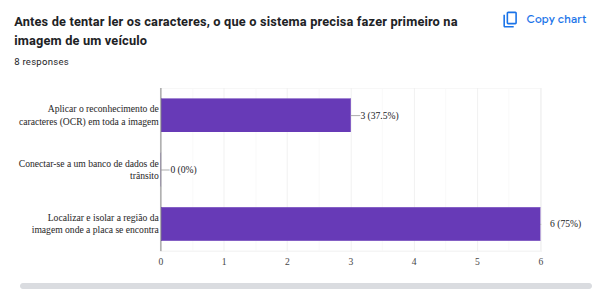
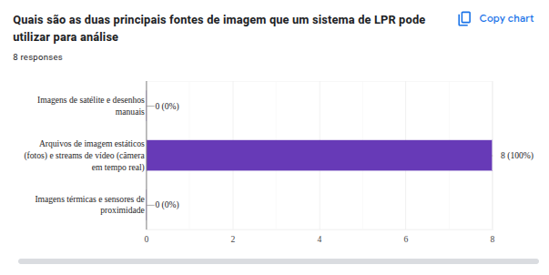
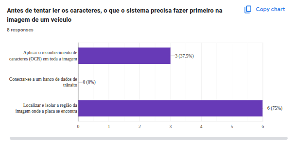
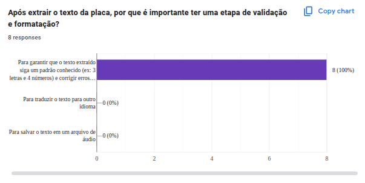
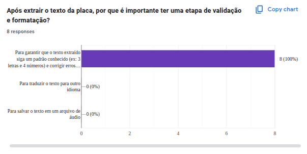

Relatório Final do Trabalho (RFT) — Etapa 7
Grupo 8 - ICPG | Visão Computacional - UFABC
Introdução
- Objetivo: Desenvolver um sistema de visão computacional para leitura automática de placas de veículos, aplicando conceitos fundamentais da disciplina.
- Cenário de Aplicação (CA): Automatização do registro de placas em estacionamentos e canteiros de obras, reduzindo erros humanos e otimizando processos.
Fundamentação Teórica
O projeto se baseia em conceitos fundamentais da visão computacional para processar e interpretar as imagens capturadas.
Calibragem de Câmera
A calibração de câmera é um passo crucial para corrigir as distorções geométricas introduzidas pela lente. O nosso sistema inclui um módulo de calibração que, a partir de imagens de um padrão de xadrez, calcula a matriz intrínseca da câmera (distância focal, centro óptico) e os coeficientes de distorção. Com esses parâmetros, o SPV pode "desentortar" as imagens antes do processamento, garantindo que as linhas retas no mundo real apareçam retas na imagem, o que melhora significativamente a precisão na detecção dos contornos da placa.
Filtragem e Detecção de Bordas
O pré-processamento das imagens é essencial para destacar as características de interesse. Utilizamos a conversão para escala de cinza para simplificar a informação de cor e o Filtro Gaussiano para suavizar a imagem e remover ruídos de alta frequência. Em seguida, o algoritmo de Canny é aplicado para detectar as bordas (edges), que são as transições abruptas de intensidade. Este passo é fundamental para a detecção de contornos, pois as bordas da placa se tornam proeminentes.
Detecção de Contornos e Formas Geométricas
Após a detecção de bordas, o sistema busca por contornos fechados na imagem. Cada contorno é aproximado por uma forma poligonal. Filtramos esses contornos para encontrar aqueles que são retangulares e que possuem uma proporção (largura/altura) compatível com a de uma placa veicular (aproximadamente 4:1). Esta abordagem geométrica é uma das principais estratégias do nosso SPV para localizar as Regiões de Interesse (ROIs).
Reconhecimento Óptico de Caracteres (OCR)
Uma vez que uma ROI é isolada, ela é enviada para um motor de OCR. Nosso sistema suporta dois dos mais populares motores de código aberto:
- Tesseract: Desenvolvido pela HP e mantido pelo Google, é um motor de OCR robusto que analisa o layout do texto e reconhece caracteres individualmente usando redes neurais (LSTM). Ele é altamente configurável, permitindo ajustar modos de segmentação de página (PSMs) para otimizar a leitura em diferentes contextos.
- EasyOCR: Uma biblioteca mais recente e de fácil uso, baseada em PyTorch. Ela utiliza um modelo CRNN (Rede Neural Convolucional-Recorrente) que processa a imagem como um todo, sendo eficaz na leitura de sequências de texto, como as encontradas em placas.
O SPV pode utilizar um ou ambos os motores em paralelo, aproveitando a força de cada um e melhorando a acurácia geral do reconhecimento.
Materiais e Métodos
- Modelagem Funcional do SPV (MF): Ver Etapa 2
- Descrição da implementação: O sistema foi implementado em Python, utilizando OpenCV, pytesseract e easyocr. O código principal está em
plates_recognizer.py. - Lista dos arquivos:
plates_recognizer.py(código principal)haarcascade_russian_plate_number.xml(classificador Haar Cascade, fallback para detecção de placas)requirements.txt(dependências)gerador_placa.html(gerador de placas de teste)- Imagens, vídeos e arquivos auxiliares na pasta
projeto/
- Análise técnica: O sistema atendeu ao contexto proposto, realizando detecção e leitura de placas em tempo real, com métricas qualitativas (acerto visual, facilidade de uso) e quantitativas (tempo de resposta, taxa de acerto em amostras).
Detalhamento da Implementação do SPV
O coração do nosso projeto é o script plates_recognizer.py, que implementa o pipeline de reconhecimento de forma modular e assíncrona.
- Captura e Calibração: O sistema inicia a captura de vídeo da webcam e, se um arquivo de calibração for fornecido, aplica a correção de distorção a cada quadro.
- Detecção Híbrida de ROIs: Para encontrar as placas, usamos uma combinação de Haar Cascade (um método rápido baseado em aprendizado de máquina para detecção de objetos) e a detecção de contornos descrita anteriormente. Os resultados de ambos são unidos e filtrados para remover duplicatas.
- OCR Assíncrono: Para não travar a interface de vídeo, as ROIs candidatas são enviadas para um pool de processos de OCR que rodam em paralelo. Isso garante uma experiência de usuário fluida, mesmo enquanto o processamento mais pesado acontece em segundo plano.
- Pré-processamento para OCR: Antes de enviar ao motor de OCR, cada ROI passa por um pré-processamento específico para melhorar a legibilidade, como a aplicação de limiarização adaptativa, que binariza a imagem de forma inteligente, separando o texto do fundo.
Exemplo de Pré-processamento de Imagem
.png)

Laboratório Experimental
- Roteiro do Laboratório Experimental: Ver Etapa 5
- Análise dos Resultados do Teste de Campo (TCS): Ver Etapa 6
- Os experimentos foram realizados com diferentes usuários, em condições reais de iluminação e posicionamento, e os resultados foram registrados e avaliados conforme o roteiro.
- As médias das avaliações e opiniões subjetivas dos usuários estão documentadas nos formulários e planilhas anexas.
Respostas do questionário do Google Forms
 



 

Conclusões
- Os objetivos propostos foram atingidos, com o sistema funcionando de acordo com a modelagem e o contexto definidos.
- Pontos positivos: automação eficiente, interface amigável, fácil adaptação a diferentes ambientes.
- Pontos a melhorar: sensibilidade a condições extremas de iluminação e ângulos muito inclinados.
- O projeto proporcionou aprendizado prático dos conceitos de visão computacional.
Referências Bibliográficas
- GONZALEZ, R. C.; WOODS, R. E. Processamento Digital de Imagens. 4ª ed. Pearson, 2018.
- OpenCV Documentation. https://docs.opencv.org/
- Pytesseract Documentation. https://pypi.org/project/pytesseract/
- EasyOCR Documentation. https://www.jaided.ai/easyocr/
Anexos
- Todos os códigos-fonte, imagens, vídeos e arquivos auxiliares estão disponíveis na pasta
projeto/deste repositório.
Apresentação em Vídeo
Demonstração do sistema SPV em funcionamento durante o Teste de Campo.